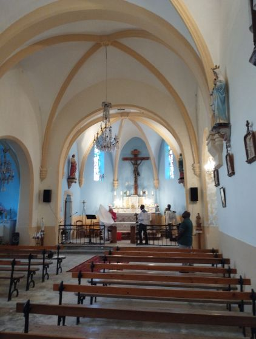
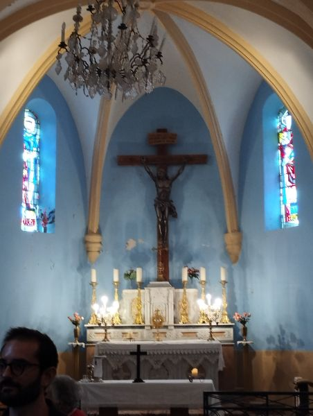
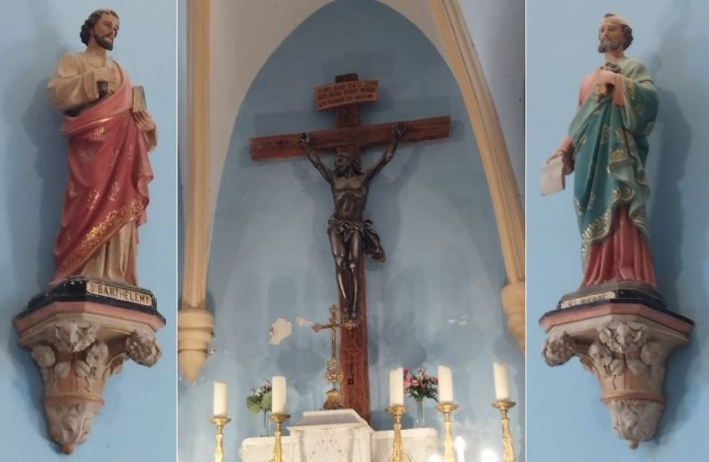
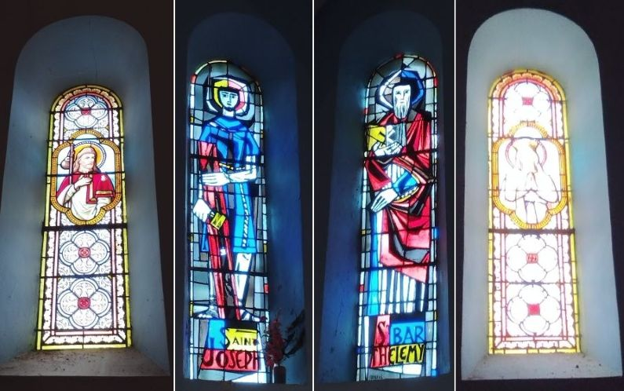
Coeur de l'Eglise Saint Barthélémy
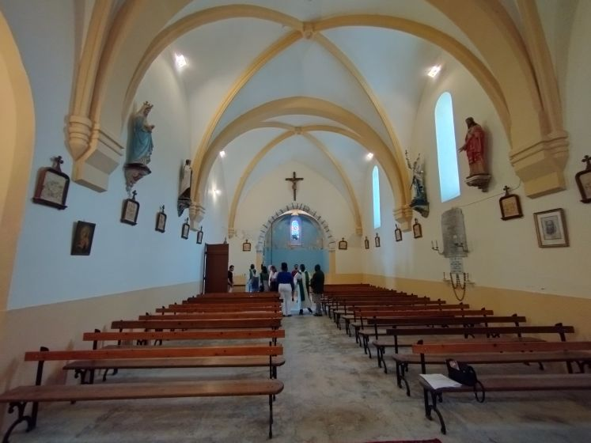
Vue vers la porte d'entrée
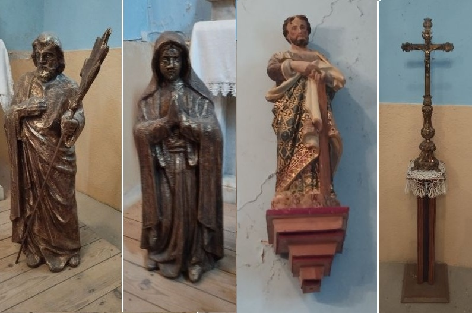
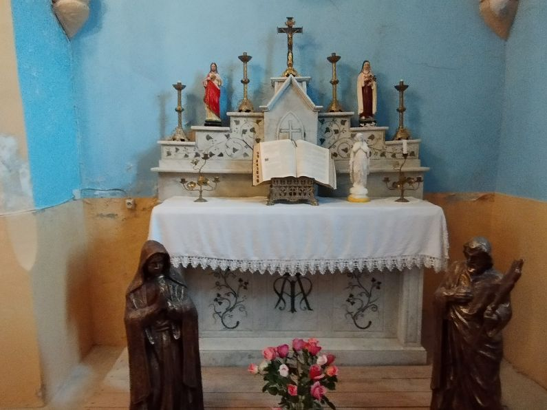
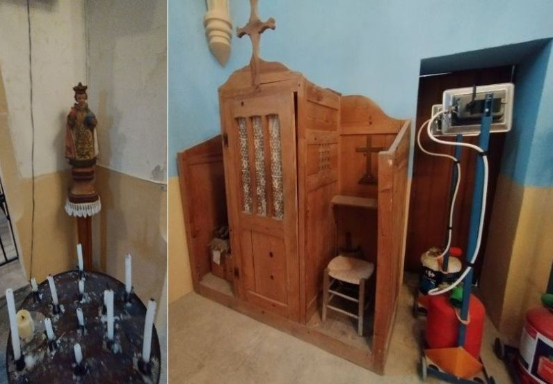
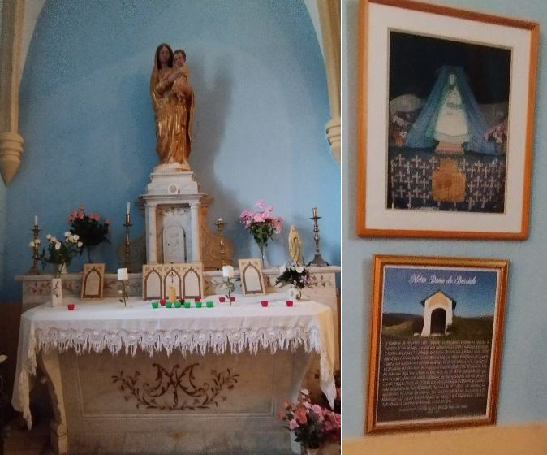
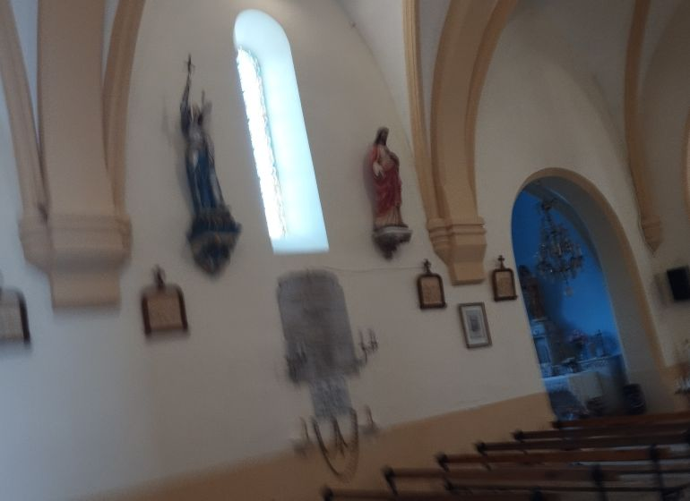
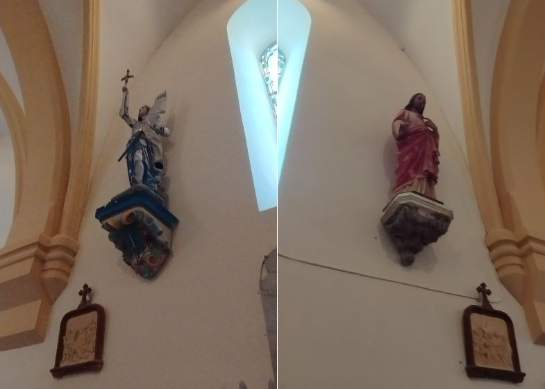
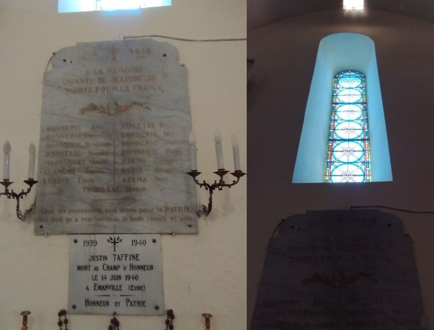
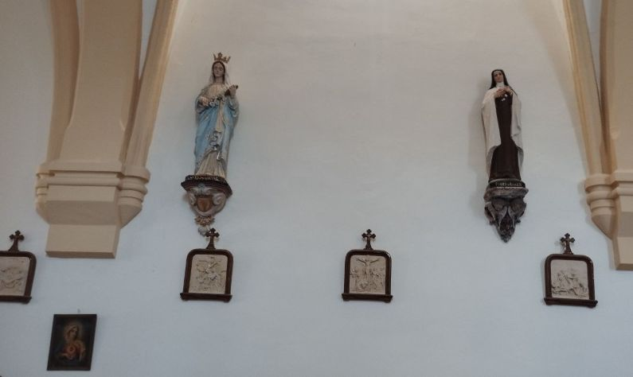
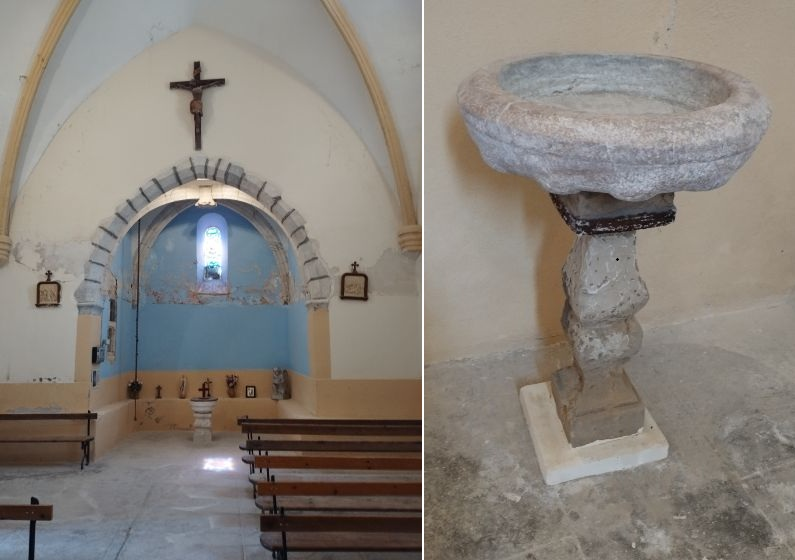
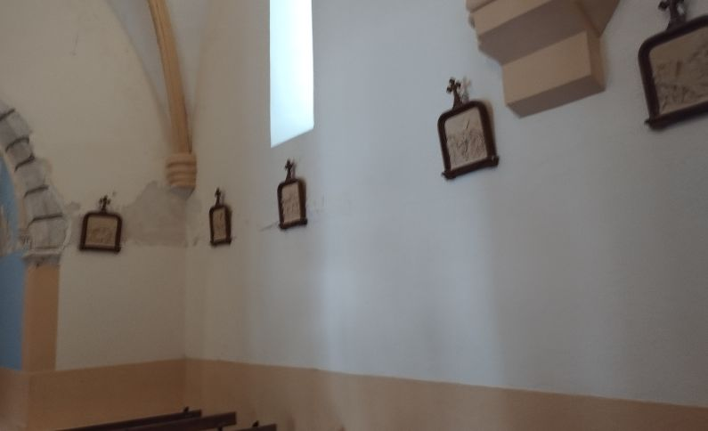
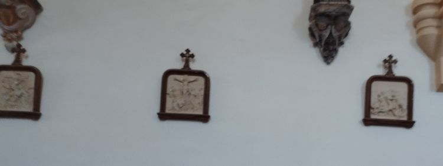
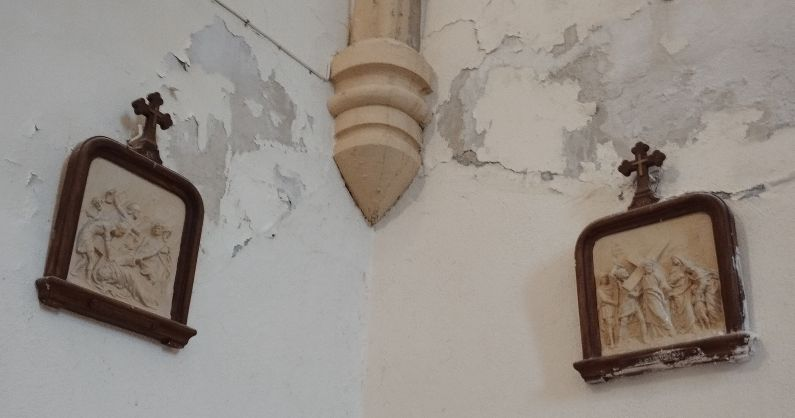
corps de l'églises - chapelles et chemin de croix
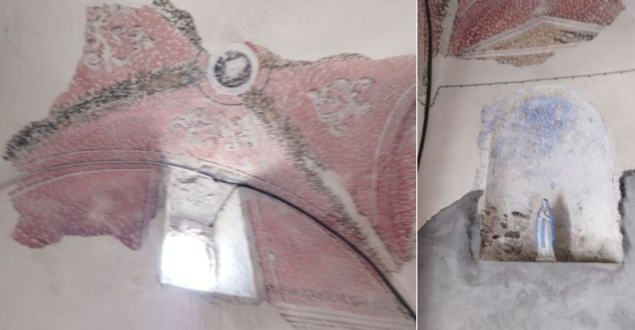
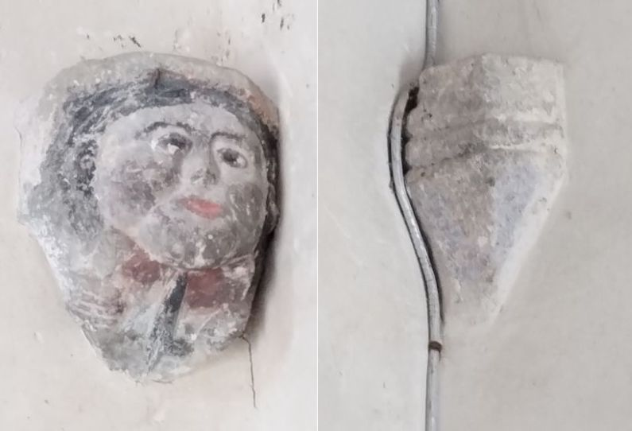
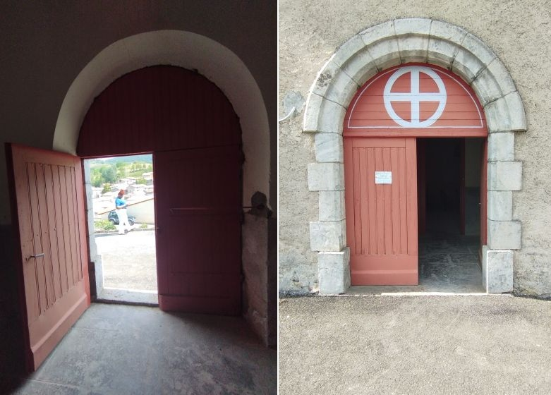
Porche d'entrée de l'église - traces de l'ancienne décoration et visage